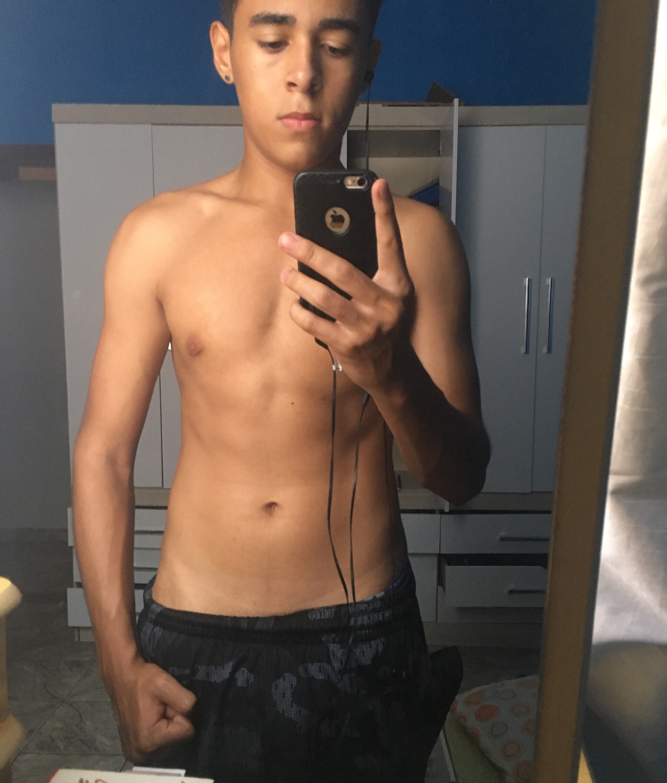
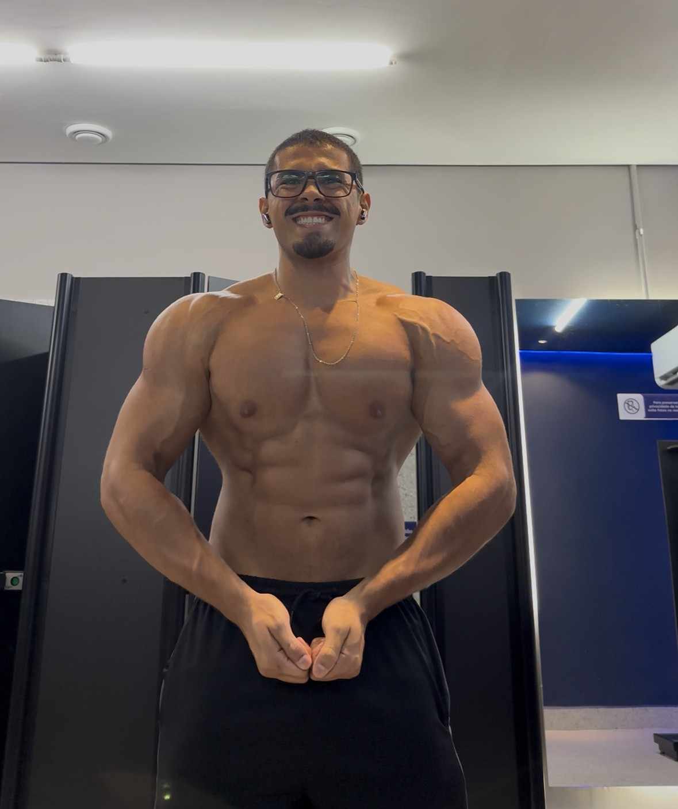

Antes de transformar a vida de tantas pessoas, eu precisei transformar a minha. Foi nessa jornada, cheia de desafios, aprendizados e evolução, que nasceu a minha vontade de ajudar e de mostrar que uma dieta não precisa ser restritiva, mas sim consistente. Assim também nasceu o Método Atlas.
Minha história na nutrição começou pela minha própria transformação. Eu não me sentia bem com meu corpo e sabia que precisava mudar.
Foi através da alimentação e do treino que transformei não só meu físico, mas também minha mente, autoestima e disciplina.
Quando vivi isso na prática, entendi que a nutrição vai muito além da estética. Ela muda vidas. Foi aí que decidi ajudar outras pessoas a conquistarem resultado de forma leve, inteligente e sustentável.

Antes
DepoisSempre fui competitivo e movido por desafios. No fisiculturismo, encontrei um esporte que exige o máximo de você todos os dias.
Não é só treinar. É ter disciplina nas refeições, constância na rotina e foco 24 horas por dia.
Entrei nesse meio para testar meus limites e evoluir como atleta e como pessoa.
Resultado não vem de cortar tudo que você gosta. Vem de uma estratégia que você consegue seguir todos os dias.Kevin Lincoln — Nutricionista & Atleta
Agende sua consulta e comece sua evolução do jeito certo. Com consistência, estratégia e o método que nasceu de uma transformação real.